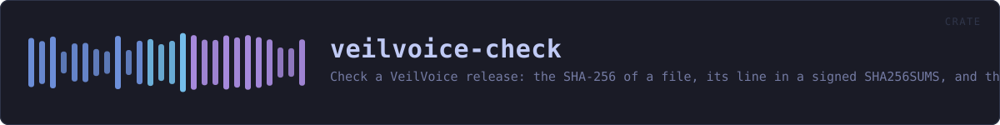

veilvoice-check
Check a VeilVoice release: the SHA-256 of a file, its line in a signed SHA256SUMS, and the detached signature over that list. No GnuPG, no network.
reference · the same page on GitHub
Check a VeilVoice release: a file's SHA-256, its line in a SHA256SUMS, and the detached OpenPGP signature over that list.
Why this is a library and not only a program
veilvoice-verify did all of this and did it inside a binary crate, which has no consumers by construction. The desktop application was asked for a verify tab — drag a download onto the window and be told whether it is the published one — and there were two ways to have that:
- link
eframeinto the 1.5 MB portable verifier, which is the one binary in this project whose smallness is a feature: it is what somebody downloads before they trust anything else here; - or move the checking out of the binary, so both front ends call the same code rather than two implementations of it.
This is the second. The verifier is unchanged in what it does and prints; it just no longer owns the arithmetic.
What a pass actually proves, and what it does not
A good signature over SHA256SUMS, plus a matching hash, proves the file is the one the holder of this key published. It does not prove the file is safe, that the source compiles to it, or that the key belongs to anybody in particular. The second of those is the check worth having and it is the one this project cannot perform for you — it needs somebody other than the author to have built the same tag and got the same hash.
Every front end that uses this has to say so. The words are here, in SCOPE, rather than in whichever interface happens to be showing the answer, so a second front end cannot show a pass without them.
No network, and no GnuPG
Nothing in this crate opens a socket or runs a program. It is given bytes and it reports on them. Downloading is the caller's problem, and the two callers that do it shell out to the system's own transfer tool.
In plain words
This is the checking behind "is this download the real one".
You give it the file you downloaded, the published list of fingerprints, and the signature over that list. It checks the signature first -- because a list nobody signed proves nothing -- and only then compares your file against it.
A pass means the file is the one the person holding that key published. It does not mean the file is safe, and it does not mean the program in it matches the source code you can read. That last one is the check worth the most, and it is the one this cannot do for you: it needs somebody other than the author to have built the same thing and got the same answer.
HOW THE CRATE FITS TOGETHER
Every arrow is a crate:: or super:: path one module actually uses, read out of the source rather than drawn by hand.
The same graph as Mermaid source
%%{init: {"theme":"base","themeVariables":{"background":"#1a1b26","primaryColor":"#1f2335","primaryTextColor":"#c0caf5","primaryBorderColor":"#7aa2f7","secondaryColor":"#16161e","tertiaryColor":"#16161e","lineColor":"#737aa2","textColor":"#c0caf5","mainBkg":"#1f2335","nodeBorder":"#7aa2f7","clusterBkg":"#16161e","clusterBorder":"#2f3549","fontFamily":"ui-monospace, SFMono-Regular, Consolas, monospace","fontSize":"14px"}}}%%
flowchart TD
n_lib(["lib.rs<br/>510 lines"])
click n_lib href "https://github.com/tilas01/veilvoice/blob/main/crates/veilvoice-check/src/lib.rs" "open the source"This site loads no third-party script, so it cannot run Mermaid; the diagram above is the same nodes and edges drawn by the generator instead. GitHub renders the source below directly.
THE FILES
| File | Lines | What it is |
|---|---|---|
lib.rs | 510 | Check a VeilVoice release: a file's SHA-256, its line in a SHA256SUMS, and the detached OpenPGP signature over that list. |